1Overview
The Model SAM 920+ SPRD is a handheld spectroscopic personal radiation detector. It brings RIID-class detection, isotope identification, and field connectivity into a compact personal form factor that stays affordable to deploy at scale. The SAM 920+ SPRD is built for reliable nuclide identification with enhanced neutron sensitivity, and it follows ANSI N42.48. GPS and network connectivity let the unit aggregate field data into shared radiation maps. Sourceless auto-stabilization holds the energy calibration steady without a check source. A built-in camera, GPS, and gyro support the survey workflow, and one-touch reach-back connects the operator to expert review in the field.
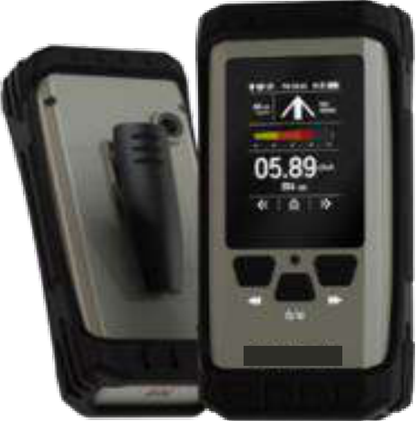
2Applications
- Homeland security
- Emergency response
- Safeguards and nuclear security
- Radiological area mapping
- Geological radiation survey
3Key Features
- ANSI N42.48 compatible
- Enhanced neutron sensitivity
- Built-in camera, GPS, and gyro sensors
- One-touch reach-back service
- Sourceless auto-stabilization
- Big-Data radiation mapping
4High-Performance CLLBC Scintillator
The SAM 920+ SPRD uses a CLLBC scintillator, which detects gamma rays and neutrons at the same time. CLLBC improves gamma energy resolution and increases neutron sensitivity compared with conventional materials. An onboard algorithm optimizes the separation between gamma and neutron events, so the operator reads a clean result for each radiation type.
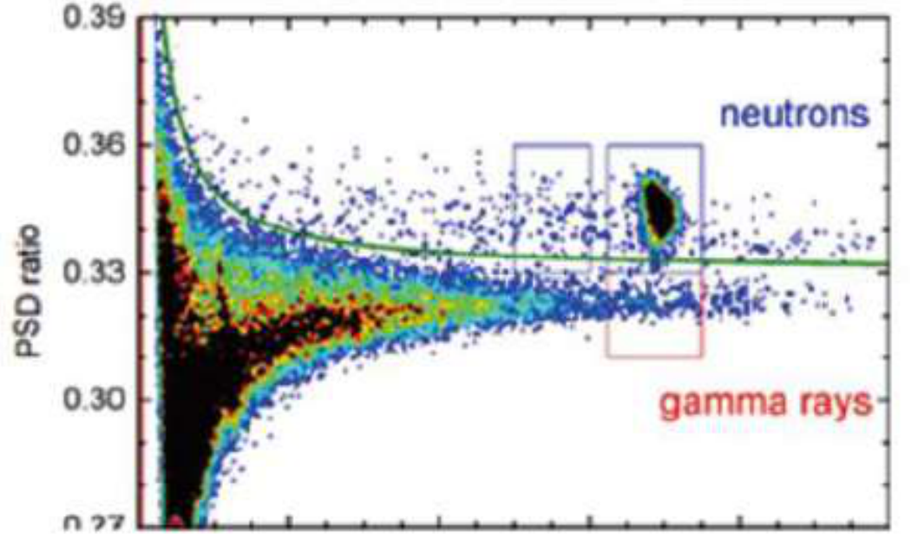
5Radiation Mapping (Big-Data)
GPS and network connectivity work together to aggregate field survey data, the Big-Data layer, into radiation maps. A map shows source locations and contaminated areas across the survey region. The workflow moves through four stages: field collection in the survey area, on-site operation of the detector, data transfer to the command center, and a finished radiation map for the response team.
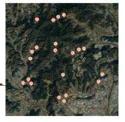
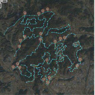
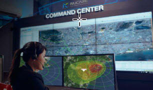
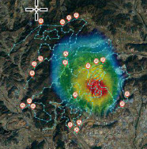
6Description of Device
The SAM 920+ SPRD is compact, light, and easy to operate in the field. The numbered callouts below identify the main components.
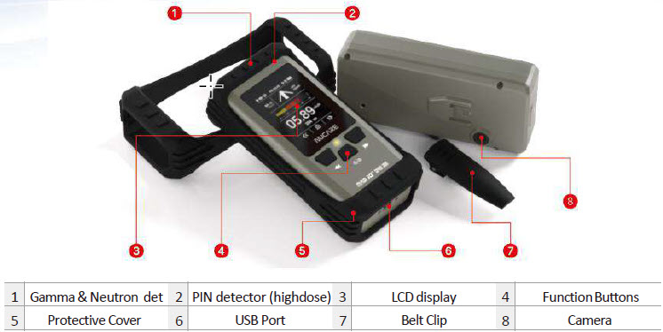
- Gamma and neutron detector
- PIN detector (high dose)
- LCD display
- Function buttons
- Protective cover
- USB port
- Belt clip
- Camera
7Application Software
The application software uses an intuitive menu with a hierarchical design and an ergonomic keypad, so operators move through detection, identification, and review without a long learning curve. The screens below show the main views.
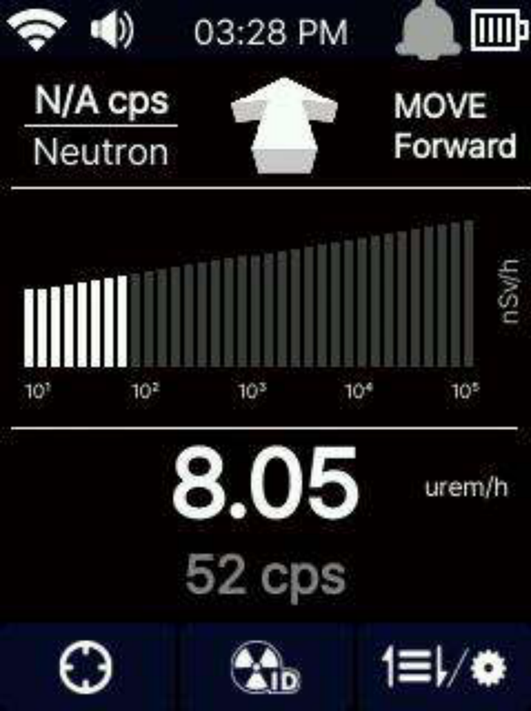
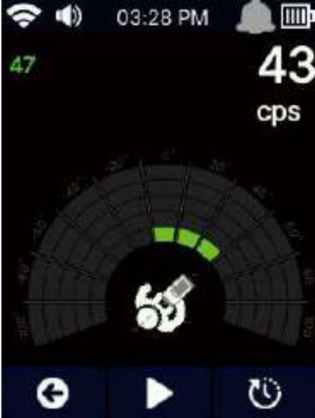
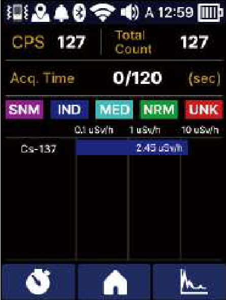
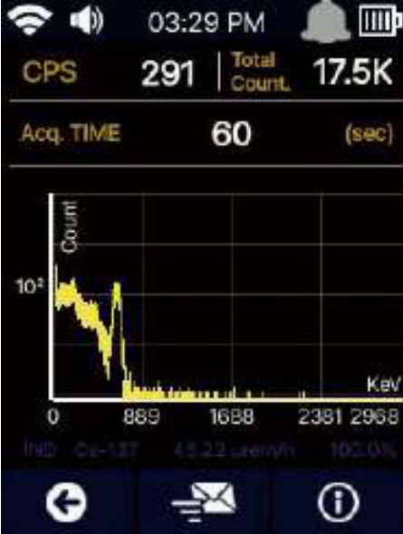
Alarm Status
The dose-rate alarm uses four levels to guide the operator toward or away from a source: Move Forward, Move Back, In Range, and Danger. Each level maps to a clear on-screen icon.
8Specifications
| Parameter | Specification |
|---|---|
| Detectors | |
| Gamma-only detector | CsI(Tl) and PIN detector (for high dose) |
| Gamma and neutron | CLLBC and PIN detector (for high dose) |
| Performance | |
| Energy range | 30 keV to 3 MeV |
| Dose rate range | <100 nSv/h to 1 mSv/h (CsI or CLLBC), 1 mSv/h to 10 mSv/h (PIN diode) |
| Energy resolution | <8.5% (CsI), <4% (CLLBC) |
| Sensitivity | CsI(Tl) 3.8 cps/µrem/h @ Cs-137, CLLBC 1.3 cps/µrem/h @ Cs-137 |
| Linearity | <2% (real-time linearization by firmware) |
| MCA channels | 16-bit, 1024 channels |
| Stabilization | Temperature-corrected real-time stabilization |
| Identification | ANSI N42.48 compatible |
| Battery | |
| Type | Li-ion |
| Operation time | Sleep mode 16 hr (display backlight off), max run time 6 hr |
| Physical | |
| Dimensions (W x H x D) | 70 mm x 148 mm x 38 mm |
| Weight | 340 g |
| Environmental | |
| Operating temperature | -20°C (-4°F) to 50°C (122°F) |
| Protection rating | IP65 |
| Relative humidity | 10 to 80%, non-condensing |
| Testing condition | EN 61326, MIL-STD-810G 501.5, MIL-STD-810G 514.6 |
| Display | |
| Type | LCD |
| Size | 2.4 in |
| Resolution | 240 x 320 pixels |
| Input / Output | |
| USB | USB-C |
| Bluetooth | BLE 5.0 |
| WLAN | IEEE 802.11 b/g/n |
| Miscellaneous | |
| GPS | 22 tracking, 66 channels, 1-10 Hz |
| Reach-back | ANSI N42.42 or CSV event data |
| Camera | CMOS 8 MP |
| Gyro sensor | Linearity 0.1 ±% FS |
| Accessories | |
| Carrying case | Portable hard case |
| Charger | USB charger |
| Belt clip | Belt clip |
| Connection cable | Mini USB cable |
Safety, EMC, and Environmental Compliance
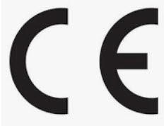
The SAM 920+ SPRD is tested to EN 61326 for measurement, control, and laboratory equipment, and to MIL-STD-810G methods 501.5 and 514.6 for high temperature and vibration. The enclosure carries an IP65 protection rating. The SAM 920+ is CE and FCC compliant.
9Webinar
Watch the SAM 920+ SPRD webinar for a full walkthrough of the detector, its workflow, and field use.
Transcript — Understanding SPRD: A Step Beyond Conventional Radiation Detection
Auto-generated transcript, reproduced as spoken and lightly formatted for reading. Timestamps open the video at that point. If you need a corrected transcript, contact us at info@berkeleynucleonics.com.
0:00[Music] Welcome everyone to today's in-depth webinar titled understanding sprd a step beyond conventional radiation detection I'm allan and it's a pleasure to have you join us today as we explore the significant advancements in radiation detection technology specifically focusing in on span roscopic personal radiation detectors commonly known as spds radiation detection has been a long for a long time been a cornerstone of safety and security across a wide array of industries so whether you talking about health care or nuclear power environmental monitoring or national security the ability to detect and identify radiation quickly and accurately is absolutely critical so over the years we've seen various types
1:08Of radiation detection tools each with its own set of strengths and limitations however the introduction of spds marks a transformative step forward in how we approach radiation detection in identification so berkeley nucleonics has been at the forefront of this transformation for decades uh with an experience uh in cutting edge solutions for radiation detection we've been instrumental in pushing the boundaries of what's possible with radiation detection technology our commitment to innovation is driven by the needs of our customers and the evolving challenges they face in their work environment so what can you expect from today session our goal is to provide you with a comprehensive understanding of spds how they differ from conventional
2:09Radiation detection devices like your regular pages and handheld isotope identifiers and why they're becomingly increasing requests in a variety of applications so through this webinar we will break down the key components and functionalities of spds discuss their practical applications and provide insights into how they can be integrated into your existing safety protocols so by the end of our time together uh you will have a clear understanding of not only what spds are but also what they represent and a significant advancement over traditional detection tools so let's embark on this exploration together and like I said by the conclusion of this session I hope you'll share enthusiasm for sprd technology and the potential it holds for enhancing radiation detection and safety practices okay now that we've set this stage let's go a bit deeper into the
3:16Specifics of spds what they are how they function and why they're considered a next generation option in the field of personal radiation detection so an sp d or a spectroscopic personal radiation detector is more than just a simple radiation detector while traditional devices like the radiation pagers uh many of you are familiar with are designed to alert the user to the presence of radiation spds take this a step further by offering spectroscopic analysis so that means that spds can not only detect radiation but also identify the type of radiation source in real time so that ability to perform this real-time spectroscopic analysis it what is what truly sets spds apart and makes them that much more powerful of a tool out on the field so let's break this
4:20Down together so traditional radiation detection devices are primarily focused on alerting boom the user to the presence of radiation they provide basic information uh such as radiation intensity but they don't offer insights into the specific nature of the radiation source this can be a significant limitation in situations where understanding the type of radiation is crucial for making informed decisions so for example uh distinguishing between naturally occurring radiation and a potentially uh potential security threat can be critical in scenarios involving public safety or environmental monitoring so in contrast spds are designed to provide a much richer set of data they incorporate advanced uh spectroscopic capabilities algorithms which allow them to analyze the energy spectrum of the detected radiation and this analysis enables the sprd to identify that
5:30Specific isotope on the spot so providing immediate and actionable information to the user so whether you're dealing with medical isotopes or industrial sources or even potentially hazardous materials the ability to quickly and accurately identify the source of radiation can make all the difference in how u respond but that's not all so spds are also designed with portability in mind they are compact lightweight cost effective easy to carry uh making them ideal for use in a wide range of environments so whether you're on the move or you're conducting inspections or stationed at a fixed location spds provide the flexibility and ease of use that professionals in the field really need and demand so this portability doesn't come at the expense
6:31Uh of performance so spds are equipped with powerful detection analysis capabilities that should ensure that the information that you need uh when you need it is there so we're going to give you a visual uh show you how some look how some differ but as you can see it's designed to be both userfriendly and highly functional so the compact design allows for uh the to easily transport it while the intuitive interface guy ensures that even users with minimal training can operate the device effectively so this balance of portability and advanced functionality is what makes sprd such an essential tool in the modern landscape of radiation detection so as we move forward uh keep in mind uh how these
7:27Advanced features real time spectroscopic analysis I stope identification and portability uh provides significant advantages over your traditional radiation detection devices so spds are not just incremental improvements they do represent a fundamental shift in how we approach radiation detection and safety uh by allowing uh users the ability to make more informed decisions quickly enhancing both safety and efficiency in the entire hazmat uh radiation process so now that we have a fundamental understanding of what an sprd is and how it represents like I said a significant advancement in radiation detection technology let's take a moment to engage with you our audience uh your experiences uh and
8:25Insights are incredibly valuable and they can also help guide our discussion as we move forward so we prepared a quick pll to get a sense of your understanding with spds so the question is simple have you ever used an sprd your options are yes no or considering it if you selected yes that's fantastic you're already familiar with the benefits that spds offer and I hope this uh webinar will deepen your understanding and highlight new ways these devices can support your work uh if you've selected no don't worry by the end of this uh webinar you'll have a clear understanding of why spds are becoming a preferred tool in radiation detection and why they might be worth considering in your operations and lastly for those of you who are
9:21Considering it this webinar is tailored just for you we'll be diving deep into the specifics of how spds compared to other radiation detection tools and discussing real world applications that might resonate with your current needs so engaging with these poll questions not only gives us a sense of your experiences but also allows us to tailor the conversation to better suit you and your interests okay so now let's move on to a detailed comparison between spds and reg regular radiation uh pages a topic that will likely address some of the c uh some of the considerations uh that you have uh in mind so as we continue it's important to understand how sprd stack up against more traditional radiation detection tools specifically regular radiation pagers so many of you may have already been familiar with these devices as they've been a staple in radiation detection for
10:27For quite some time but let's start by looking at what regular radiation pages do so these devices are designed to perform basic radiation detection tests they alert users to the presence of radiation by measuring radiation levels and then giving a simple indication uh visually or through an audible alarm when radiation detected is above a certain threshold so they are relatively straightforward tools which is both their strength and to some degree their limitation the simplicity of some of these regular pagers makes them easy to use and accessible to wide range of users however this simplicity does come at a cost uh namely in terms of functionality so regular pages are excellent and telling you that radiation is present but that's not where their
11:25Capabilities end but that's sorry that's where their capabilities end they don't provide any information about the type of radiation or its source in situations where knowing what kind of radiation you're dealing with uh is really crucial this lack of specificity can be a significant drawback another limitation of a regular pager is their sensitivity while they are effective in many scenarios they may not always detect lower levels of radiation or differentiate between different types of radiation sources so this can be a critical limitation in environments where uh precision and accuracy are essential this is where spds truly shine so spds take radiation detection to the next level by incorporating advanced
12:25Features that address these limitations so first and foremost sp rds offer isotope identification so this means that when radiation is detected the sprd doesn't just alert you it begins to analyze radiation to determine its type so is a medical isotope an industrial source uh something more concerning the sprd can provide this information into some degree real time empowering you with the knowledge to make informed decisions quickly additionally spds are designed with higher sensitivity and specificity they are capable of detecting uh lower levels of radiation and distinguishing between different types of radiations with a bit better or depending on the type of make but with better
13:24Accuracy so this makes them invaluable in situations where the nature of the radiation is just as important as its presence so what regular radiation pages are reliable tools spds offer a for more far more sophisticated and comprehensive solution they will provide uh not only detection but with this identification and greater sensitivity and specificity this makes them the essential tool for professionals who need more than just a simple alarm they need detailed actionable information so as we continue we'll explore more about practical applications of spds and why they're becoming essential in modern radiation detection strategies but first let's discuss how spds are being used in various industries and the impact that they're having in real world scenarios so let's go to the next slide all right so now having explored
14:31The capabilities of sprs and how they compare with regular radiation pages let's now turn our attention to another key player in the field something that we really know in radiation detection handheld isotope identifiers so these devices are known for their high precision and ability to provide detailed gamma analysis so making them a very powerful tool in the hands of professionals who require comprehensive radiation data so handheld isotope identifiers are sophisticated instruments designed for indepth analysis of gamma radiation they excel at detecting and identifying specific isotopes and then providing detailed information about the radiation source so these devices are typically used in situations where uh precise
15:30Identification is paramount such as uh nuclear facilities uh research laboratories and specialized security operations so the data that they provide can be uh highly granular offering insights that are uh crucial for very highlevel complex decision making processes but however this level of details and precision comes with certain trade-offs particularly in the terms of cost portability and ease of use so handheld isotope identifiers are often larger uh heavier and some a bit more complex to operate than your standard spds they do require more training to use effectively uh there is to some degree margins of error that can occur uh their size can make them less
16:31Convenient to carry around especially in dynamic or field-based environments so this is why uh spds offer a distinct advantage uh spds are designed with portability in mind they're compact they're light they're user friendly so these are ideal for use in the field or situations where it's quick on the go radiation detection is needed uh but despite their smaller size sprd still offer powerful features including spectroscopic analysis even if it's not identified it still give you a spectrum isotope identification albeit with the focus on providing actionable data quickly rather than uh exhaustive a lot of data so it's just quick isotope but let's compare the two in a practical context if you are in a situation that requires quick decision- making such as
17:31An emergency response situation or a security checkpoint and I an sprd might be your go-to tool it'll give you the isotope it'll let you know it'll give you the file so that information you could send to a reach back but its portability and ease of use allow for rapid deployment and its real time analysis capabilities provide the critical info I needed to make immediate decisions but uh on the other hand if you are in a more controlled environment uh let shielding a lab where radiation data is required you really need that like in a nuclear power plant or a gamma analysis uh industry a handheld isotope identifier might be the better choice so it's its ability to provide detailed n42 files spectra is invaluable being able to be
18:33In situations where every nuance of the radiation source needs to be understood multiple isotopes spds and handheld isotope identifiers each have their strengths ideal scenarios but sprd is excelence scenarios where portability uh ease of use and rapid just quick analysis are key as isotope identifiers those are best suited for highlevel individuals that know about radiation uh that do require uh when you do need more analysis in those spectra files so understanding the strengths and the limitations of each device will ultimately allow you to determine what's the right one for you so ensuring that you are equipped to handle uh a radiation detection scenario effectively budget like budget's also important so we'll explore how these tools and specifically spds are applied across different fields of work but first uh we're going to take a quick another
19:36Quick pll to better understand the diverse applications and industries to represent today our audience okay so to ensure that our discussion today is as relevant and tailored as possible we'd like to learn more about the backgrounds and fields of those joining us so we have a d diverse group of professionals here and understanding your specific applications can help us focus on the aspects of sprd technology that are mo uh most pertinent to your needs so we've set up a poll uh question and the question is what is your application or field of work uh the options include uh emergency response uh medical industrial and also other so if you're in emergency response you know how critical it is to have a rel reliable tool so portable tools that
20:38Can provide immediate information uh sprs with their analysis and easy to use design are perfect for quickly identifying radiation sources in the field allowing responders to take appropriate and swift action uh for those in security whether it's border checkpoints uh transportation hubs or during big super bowl sporting events spds offer a discret and effective way to monitor for uh radiation threats so their portability means they can be used in a a wide range of environments and situations and their isop identification capabilities help ensure that any detected radiation is thoroughly understood and also another one application medical uh particularly hospitals and clinics where they have medical radioactive materials using spds
21:38Can provide a quick way to monitor for potential uh contamination or if orphan sources idine 131 if it's lost their ability to identify specific isotopes can be crucial and ensuring that all the radiation sources are uh properly accounted for so for those working in industrial settings such as manufacturing energy production spds can help monitor uh radiation levels to ensure both safety and compliance so their ease of use allows for regular monitoring and excessive training and lastly other there's a lot of people in this webinar so if you don't fit within that if you're just interesting in spds uh they are versatile enough to be applied in a wide range of scenarios so the combination of portability ease of use real time data it's a great tool so understanding your application uh field of work helps us highlight the most relevant
22:42Features and benefits as we continue so as we move forward we'll go deeper into how spds are being utilized in these sectors and providing uh real world examples that illustrate their effectiv and versatility so okay thank you for answering the questions let's go to the next slide now that we've explored how spds compared to other radiation tools specifically pagers and isotope identifiers it's important to focus on the specific advantages that make sprd stand out so particularly in field operations so spds are designed with the needs of first responders uh security personnel and other professionals in mind offering several key benefits that enhance their effectiveness in various scenarios first and foremost portability
23:43And convenience are major advantages of spds these the devices are compact and lightweight so they're easy to use carry and deploy out on the field so whether you're on foot in a vehicle or stationed at a checkpoint the ability to have a powerful radiation detection tool that doesn't weigh you down or requires bulky equipment is invaluable so this portability ensures that spds can be used in a wide range of environments from uh crowded football games to remote locations without hindering the mobility of the end user in addition to their portability spds offer real time isotope identification so this feature is a gamechanger in radiation detection so it allows end users to immediately detect and identify the type of radiation they're in front of so
24:52Traditional radiation detectors might only alert you to the presence of radiation but an sprd goes further by analyzing the radiation spectrum and then identifying specific isotopes right on the spot so this capability is crucial in scenarios where understanding the exact nature of the radiation source is essential for making informed decisions whether it's distinguishing between a harmless medical cancer isotope uh that medical therapy and a potential security threat or quickly assessing the situation during an emergency response another significant advantage of spds is they're enhanced to some degree accuracy and sensitivity compared to pages so these devices are designed to detect a bit lower levels of radiation with greater
25:50Precision reducing the likelihood of a false positives or missed detections so this increased sensitivity is particularly important in environments where even small amounts of radiation could pose a significant risk or indicate the presence of elicit materials so the accuracy of spds also means that users can trust this data they receive the spectra which is critical when time is of the essence and decisions need to be made very quickly so given these features spds are ideal for like I said first responders insecurity uh fast-paced often unpredictable environments that these professionals work in having a tool that is not only small reliable but also easy to use uh make them make all the difference so the combination of uh the gam
26:50Analysis the enhanced sensitivity acquisition time allows first responders to quickly assess situations protect themselves the public and take appropriate actions so similarly security personnel could use spds to effectively monitor for radiation threats in hi trffic areas the border canada mexico uh ensuring that potential risks are identified and mitigated before the escalate so the advantages of spds in the field are clear but their portability and convenience make them easy to car and deploy and while their ip identification and their better sensitivity provide users with the critical information that they need to make these features uh invaluable and that's why we have a lot of customers particularly in dynamic and high stakes environments like emergency response and security operations that really like the strengths of these sprgs uh but it's
27:54Also important to acknowledge their limitations so no tool is perfect and understanding where spds may fall short can help ensure that they are used effectively and appropriately in the field so we're going to move on to discuss some of the potential limitations of spds because again you very general radiation detectors pagers spds isotope identifiers and even high prity germania systems to some degree they're all radi they're all doing radiation detection but they all do it in different ways and they do have their pros and cons so we're going to discuss now uh some of the limitations that we might see with spds while spds offer significant advantages it's crucial to recognize their potential limitations to so to ensure that they are used effectively in the field so by understanding these limitations users can make informed decisions about when and how to
29:06Best deploy spds so one of the primary potential limitations of spds is their limited analysis depth compared to handheld isotope identifiers hpg systems so while spds are equipped with spectroscopic capabilities that allow for real time isope identification uh they the level of detail they provide may not be as comprehensive as what you would get with more specialized handheld isotope identifiers so these handheld devices can offer more detailed analysis some even have the ability to quantify specific isotopes and provide extensive data that's very important for complex decision-making scenarios so this means that while sprd is excel in quick on the spot analysis they may not be the best
30:11Tools for situation requiring detailed in-depth gamma analysis so another uh important consideration is the size of the detectors used in spds um some of them are design like I said they're designed for portability and convenience which means that the detectors themselves are going to be relatively small so these smaller detectors commonly made from materials like cesium ide can be less effective in certain situations compared to larger detectors made from materials like sodium iodide lenum bromide serum bromide so for instance cium iodide detectors while they're good for basic detection may not provide the same level of resolution or sensitivity as sodium iodide or lan bromi detectors are 2x two
31:08Or 3x3 inches in size so this difference in detector size and material can impact the accuracy and the quality of the radiation data collected uh particularly in scenarios where high resolution spectroscopy analysis is required so you really want to be able to differentiate between three to four isotopes so that's something that spds might have a bit of problem with uh lastly additionally battery life and operational considerations are important factors to that you need to be aware of um spds are designed to be portable but this portability can sometimes come at the cost of the battery life so depending on the specific model and how uh intensely the device is being used the battery life of an sprd might be limited so this can be a concern in
32:09Situations where extended operation is necessary so the access to charging facilities may be limited so you might need uh swappable batteries or disposable batteries but to address this users should ensure their devices are fully charged before deployment and consider carrying like I said spare batteries and portable charging solutions as part of their field equipment and there are situations where very high level gamma analysis is needed and this is where other tools might be more appropriate like in settings in a laboratory at one of the large laboratories here in the bay area or during uh in-depth investigations the detailed data provided by handheld isotope identifiers or other specified instruments may be necessary to fully understand the radiation source or sources and their implications so in such cases relying solely on an sprd could result in incomplete data and
33:19Would necessitate additional analysis with more sophisticated equipment so while sds are powerful they're great tools like I said they do have their limitations it's the smaller size uh the resolution limitations could be around 8% uh when you're measuring cesium c 137 uh compared to larger 2x two sodium iodide len and bromide detectors and then like I said coupled with some of the life challenges and the need for uh the life battery challenges the need for more detailed analysis that's very important so by recognizing these issues to use spds effectively you just have to have the right context you have to know when to use them so these tools to achieve the most accurate and comprehensive results you need to know what your situation is so as we proceed we'll we discuss practical tips for maximizing
34:22The effectiveness of spds in the field and best practices for integrating the them into a more broader focused in detection strategies okay so we've explored both the strengths and limitations of spds let's focus on why spds are often the optimal choice in many scenarios so these devices are designed to meet specific needs of professionals who require a balance between affordability performance budget uh making them highly effective in a wide range of applications but one of the key areas where sprd is excel is in emergency response so in emergency situations time is of the essence and the responders need tools that are both reliable and easy to use so spds offer the perfect combination of portability
35:23Uh is identification allowing first responders to quickly assess radi levels and then do isotope identification right on the spot so whether you're dealing with potential radi radiological incident a natural disaster involving a damaged nuclear facility or any situation where radiation might be present spds provide the immediate data needed to make informed decisions and take swift action um another critical application for spds is border security so borders uh and checkpoints security law enforcement personnel uh need to be able to quickly screen vehicles cargo and individuals uh for radiation with c without causing a significant delay the small size of the
36:18Spds make them ideal for those types of situations where security officers can carry spds on uh on their person and then using them fast non-intrusive scans that not only detect radiation but will also identify its specific source so this capability is extremely important and preventing the smuggling of like radiation radioactive materials or the ability to differentiate between harmless sources uh potential threats can make all the difference so law enforcements uh on the field out there uh it's very it's invaluable police officers and other law enforcement personnel are often the first people first on the scene in situations where radiation might be a concern such like an aftermath of an industrial accident or a
37:19Terrorist attack or when dealing with spec suspicious packages so spds will provide these officers with the a portable easyto use tool that delivers crucial information quickly so the on the spot gamma iope identification feature is useful in these scenarios allowing law enforcement to quickly determine whether a situation involves a radioactive source or just a benign material banana or potassium naturally occurring but what makes prds truly stand out is their ability to balance portability with performance so they may not offer the highest resolution or the most detailed analysis but they excel in providing fast actionable data in the field the compact size of spds combined with uh spectroscopic
38:19Capabilities it makes them their choice for professionals who need a reliable radiation tool that can be easily carried and deployed so let's consider a scenario where imagine a security checkpoint at a major international airport where speed is vital uh the personnel equipped with spds can quickly scan large volumes of passengers and luggage uh identifying any radiation threats without slowing down the flow of traffic so in this scenario local s uh sfl or oakland if they get a hit there's radiation with the spd they'll be able to identify or get a gamma analysis get a gamma file it might be wrong it might not even identify but having that gamma file then
39:17They could send that n42 file to a reback place and then determine what it is determine if it is medical or if it is something that shouldn't be there like a special nuclear material but that information very quickly will make the lives easier of everyone involved and how to assess the problem if it's just the iine 131 a medical isotope and the passenger that's flying by is acknowledging that they told the officer that that's what they're dealing with then it confirms it they shouldn't be traveling if they have I 131 but some people they'll still do it but that's complete different situation to someone that has like special nuclear material or something like that so again when speed efficiency and quickness is needed when the individual doesn't have to have a major understanding of gamma analysis all they need to do is really collect it
40:20Then send it back to someone that knows it spds is the way to go and again costs they're are going to be significant ifly cheaper than uh a portable isotope identifier with lanum bromide significantly cheaper than a portable hbg system so again you want to make sure that you're you want to make sure that when you're buying or trying to decide between a pager sprd a red or hyper geranium system you have all this in mind when you're talking to a professional so this is when you should truly be going for and sprd well spds are they're highly versatile and effective and like I said many scenarios there are certain situations where they may not be the best choice so you have to understand these limitations it's crucial for ensuring that your expectations are met and the right tool is used for the right
41:20Job so particularly in environments where detailed gamma analysis or complex radiation sources are involved uh you need an that's where you need a portable isotope identifier so one such scenario involves cases requiring detailed gamma isotope analysis so while spds are excellent for quick on the spot identification of sources uh there smaller detectors which are often made from like I said czm iodine will most likely not provide the same level of resolution as larger more complex detectors using more specialized devices so for instance larger sodium iodides lum bromide and serum bromide detectors which are typically 2x two or 3x3 inches in size offer higher resolution and greater sensitivity so these larger detectors are capable
42:20Of providing more detailed spectroscopy data uh which is essential when uh we're when you need very precise isotope identification and to some degree quantification when that's required so environments were complex radiation sources like I said such like nuclear power plants uh research laboratories or investigations the ability to conduct comprehensive analysis it is often a must and these settings spds are not will not be a to provide the level of detailed uh needed to fully understand the radiation source or sources in its implications for example when dealing with mixed radiation fields or when there is a need to differentiate between multiple isotopes in close
43:17Proximity handheld isotope identifiers or other more advanced equipment is preferred so these devices are specifically designed to handled complex scenarios offering the detailed game analysis that spds might not be able to provide another situation might be uh best choice when you're doing longterm monitoring uh data spds are designed for portability and ease of use so which means the battery life might not last and the data storage capabilities are optimized for shortterm on the go rather than using them for extended periods of times so in cases where continuous monitoring is needed where large amounts of data need to be collected and analyzed over time other devices even backpack iop identifiers other devices with longer
44:16Battery life uh greater storage capability and more robust data management uh will be more appropriate so but I know spr spds are are powerful they're vle tools but there are specific situations where they might not be the ultimalife isotope identifiers more advanced equip equipment will be needed so again by understanding these limitations professionals can ensure that they're using the most appropriate tool just like when you're choosing between a pager a sprd a handheld a backpack a big mobile system area
45:20Monitor maximizing both safety and effectiveness you need to know what your application is what your intent usage will be and then you could easily determine kind of whether or not the sprd will work for you so all right so we're gonna open it up to the forum we're gonna open up to the group let's take some questions okay let me see let me adjust my screen here
Cited in peer-reviewed research
Independent publications citing this instrument, indexed by Bioz. Citation counts and Bioz Stars ratings are shown live and update as new papers are indexed.